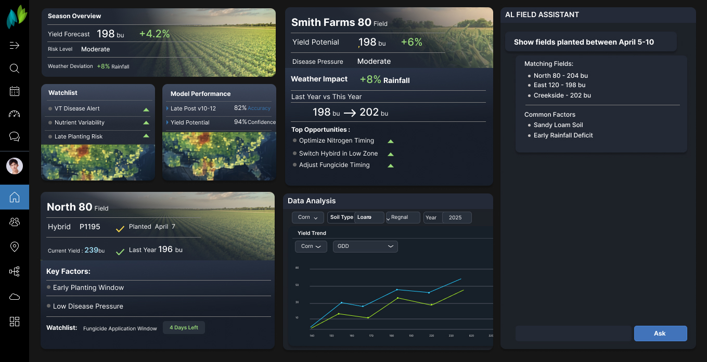
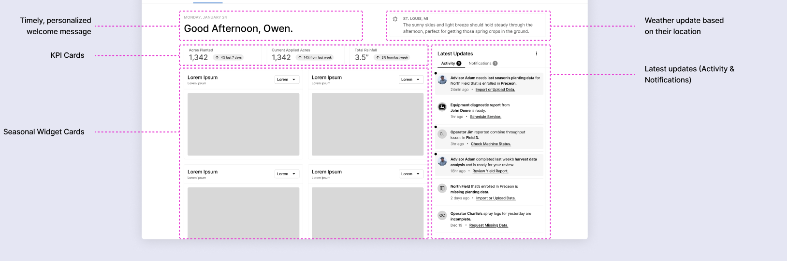
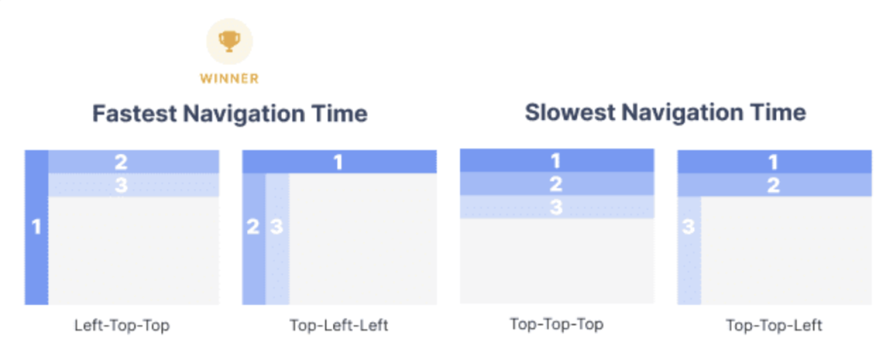
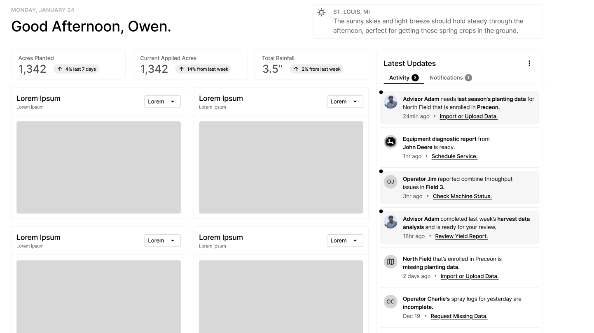
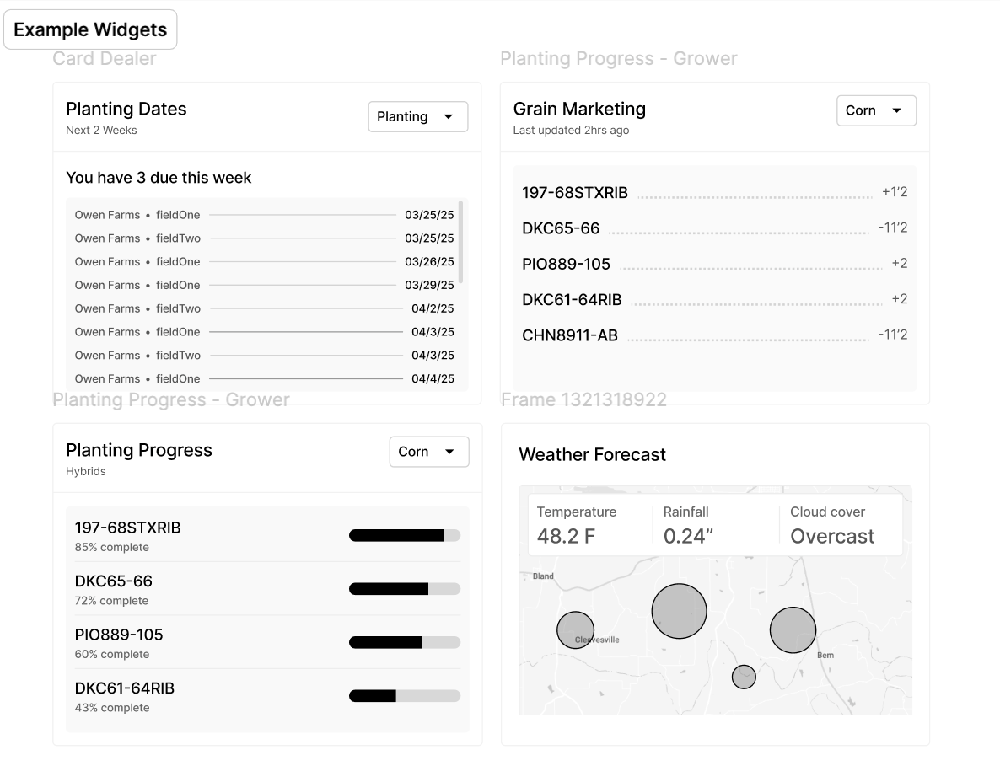
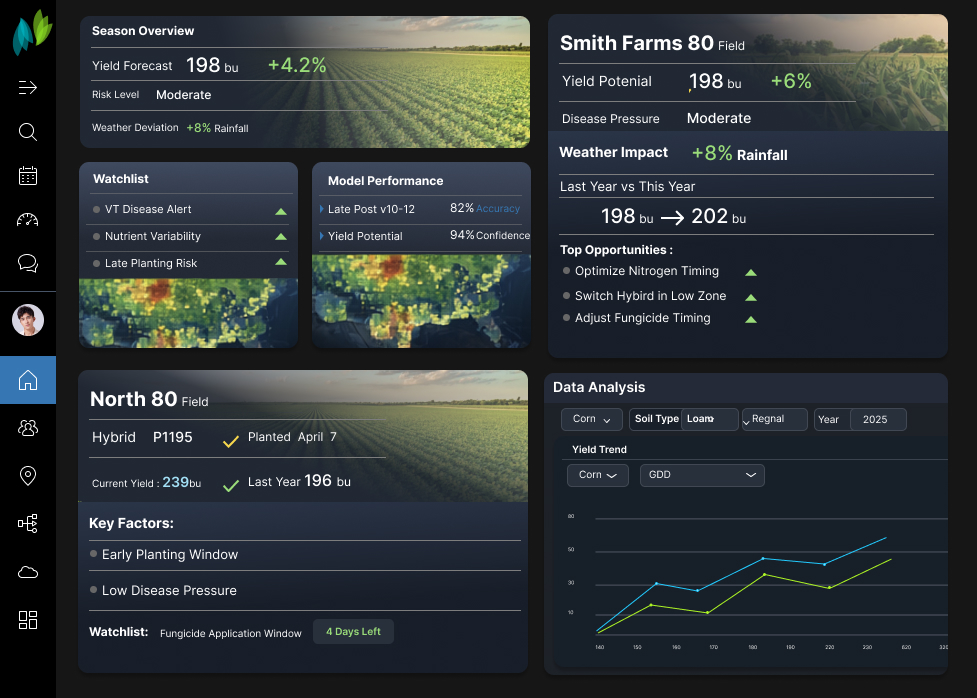

Fragmented dashboards, analytics tools, model outputs, and manual interpretation created cognitive overload and slowed the path from insight to action.
Lead UX Strategist / Product Design Lead / PM
Agronomic Dashboard
A unified decision-support experience that connects field data, predictive models, insight cards, and AI-assisted exploration into one workflow for faster field-level action.

Reframed passive reporting as active decision support while helping manage the dashboard buildout and translate user insights into model transparency, field-level recommendations, integrated analysis, and query-based insight discovery.
Shifted the product from a reporting tool into a decision-support workflow that increased trust in predictive outputs and accelerated data-driven field workflows.
The dashboard needed to reduce interpretation work, not add another reporting surface.
Agronomic teams were working across field records, weather signals, scouting notes, predictive model outputs, and operational updates. Each source had value, but the experience forced users to assemble the story themselves.
The design challenge was to create one place where a grower, advisor, or operations partner could understand what changed, why it mattered, and what action to take next.
Project management
Helped coordinate the dashboard buildout while keeping user needs, delivery priorities, and product direction aligned.
Model transparency
Expose confidence, accuracy, weather impact, and the factors influencing recommendations.
Decision support
Connect forecast, field performance, and recommended actions in the same working view.
Information architecture
Early IA work shaped the page around urgency, context, and next action.
The information architecture grouped the experience into a personalized opening, KPI cards, seasonal widgets, weather context, and a latest-updates rail. The goal was not to show every available metric. It was to make the first screen answer: where should I look, what changed, and what needs attention?

Navigation strategy
Navigation patterns were evaluated for speed before the system language was finalized.
Navigation studies helped identify which dashboard structures supported faster movement through nested content. The resulting direction favored a persistent left rail for global movement, top-level contextual filters, and cards that could hold focused workflows without forcing users to leave the situational view.

Wireframes tested the operating rhythm of the dashboard.
The lower-fidelity views explored how dashboard modules would behave across roles and seasons: grower filters, planting dates, weekly planting progress, vegetation index, localized weather, and a persistent latest-updates rail.
This phase made the system feel operational. It showed how users could move from a broad account view into field-specific work without losing awareness of alerts, missing data, service needs, or advisor recommendations.


Final concept
The final direction connected predictive insight with the user's next question.
The polished concept brought model performance, yield potential, risk signals, weather impact, watchlists, data analysis, and AI-assisted exploration into one workspace. Users could review field-level recommendations, inspect the model signals behind them, and ask follow-up questions without leaving the dashboard.

The impact was a clearer path from data to field-level action.
The work repositioned the product from a reporting destination into a decision-support system. Instead of asking users to reconcile disconnected signals, the dashboard framed model outputs, field status, and recommendations as one understandable workflow.
- Reduced cognitive load by organizing seasonal metrics, alerts, and recommendations around daily decisions.
- Increased confidence in predictive outputs by surfacing model performance, confidence, and contributing factors.
- Accelerated analysis by pairing structured insight cards with AI-assisted query and exploration patterns.